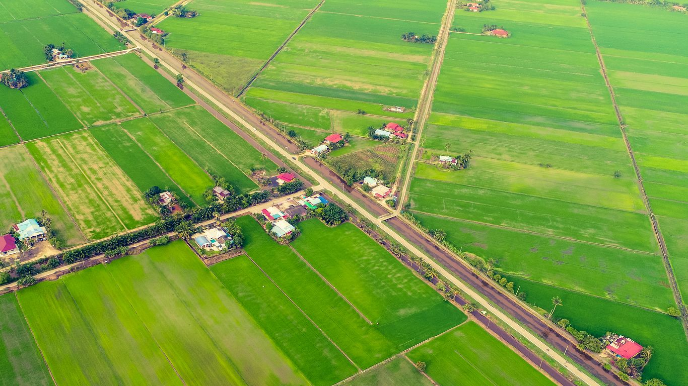

Sungai Besar is a town located in the Sabak Bernam district of Selangor, Malaysia.
Known for its agricultural landscapes and village surroundings, Sungai Besar offers visitors a peaceful countryside experience.
Discover nature, attractions and local markets.
Explore traditional dishes and local heritage.
Share your travel interests and preferences.
Peaceful paddy fields and agricultural landscapes.
Local dishes influenced by Javanese and Banjar heritage.
Traditional village life, markets and cultural activities.